Northern Cape
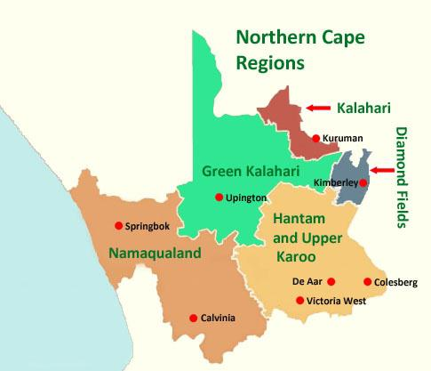
The Northern Cape is South Africa's largest province, with desert landscapes, wildlife and gemstones. With Botswana, it shares Kgalagadi Transfrontier Park, whose red sand dunes shelter lions and falcons. Wild daisies and other springtime flowers carpet the typically arid plains of Namaqualand, a region stretching into Namibia. In Kimberley, the provincial capital, The Big Hole mine recalls the 1870s diamond rush.
On the edge of the Kalahari Desert, the Green Kalahari is a popular destination for camping, paddling on the Orange River, and visiting the vineyards surrounding the town of Upington. Bridging the Namibian border, ǀAi-ǀAis/Richtersveld Transfrontier Park is distinguished by its giant succulents and rocky, moonlike terrain that attracts 4x4 adventurers. To the south, Mokala National Park is home to spiky camelthorn trees and big game like black rhinos. The clear skies of the remote Karoo region, site of the Southern African Large Telescope, draw stargazers.
 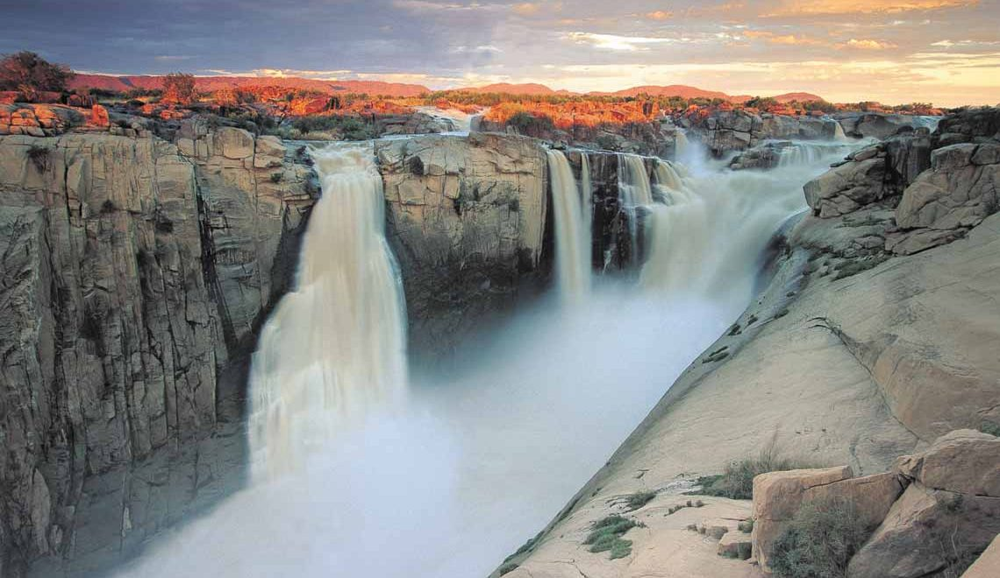
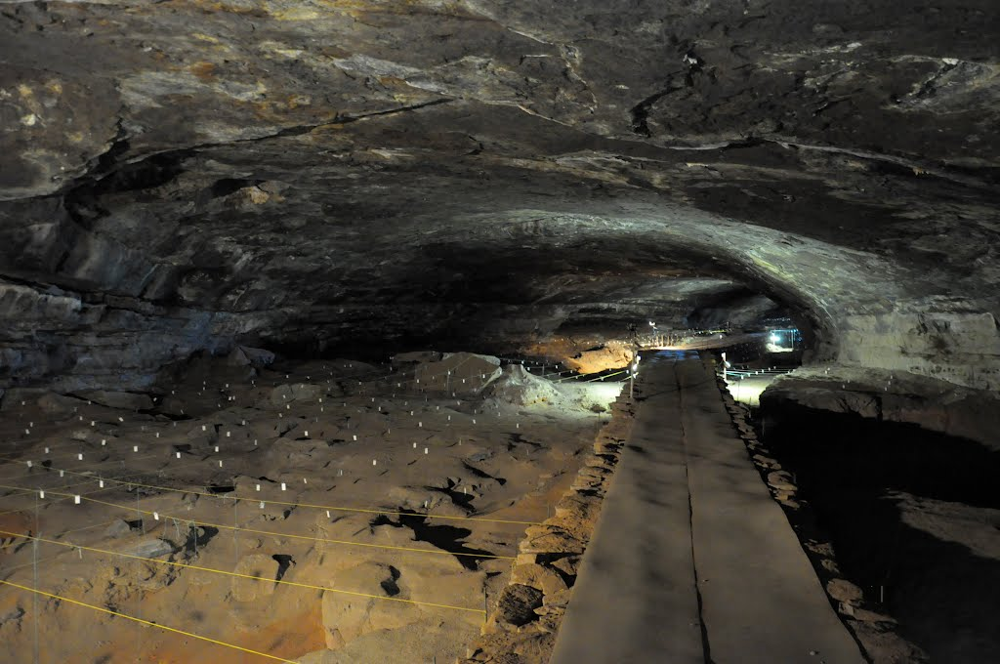
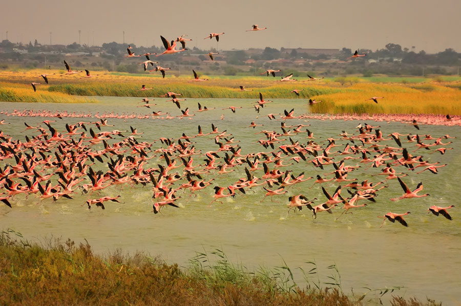
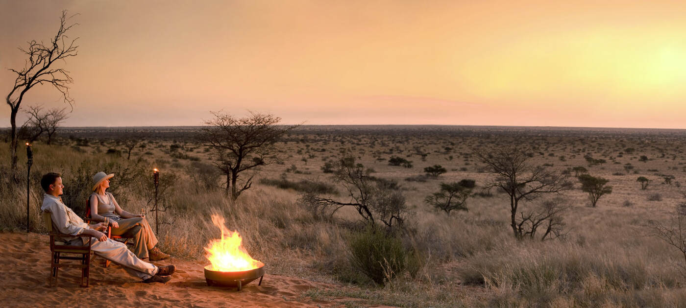
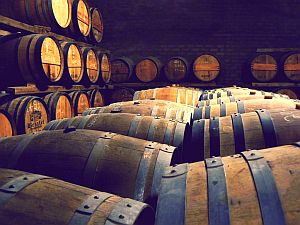
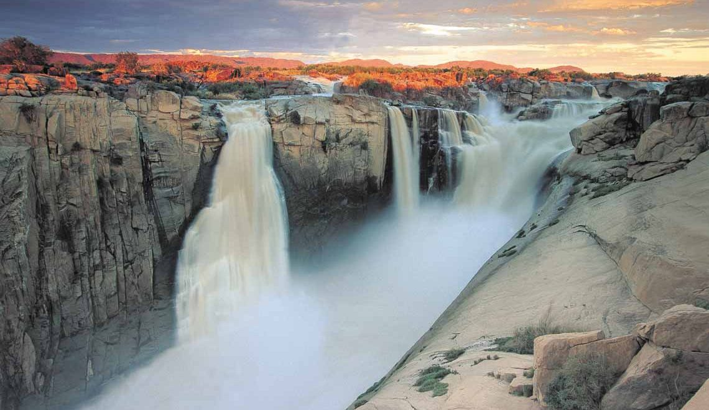
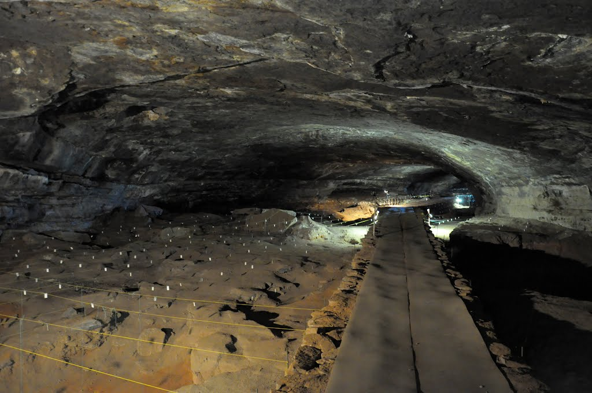
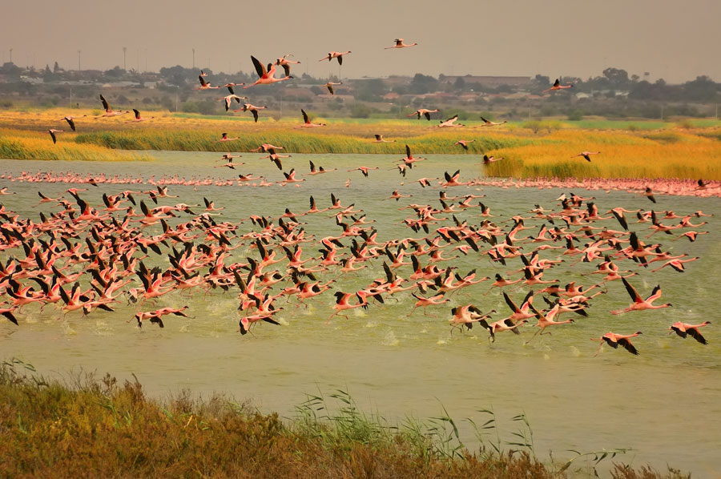
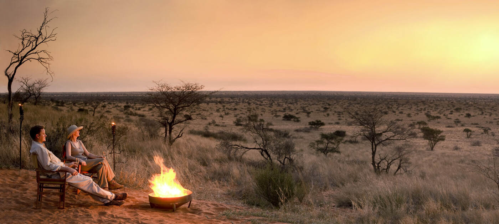
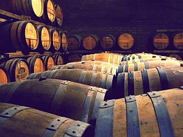
Click here for more info on the Northern Cape